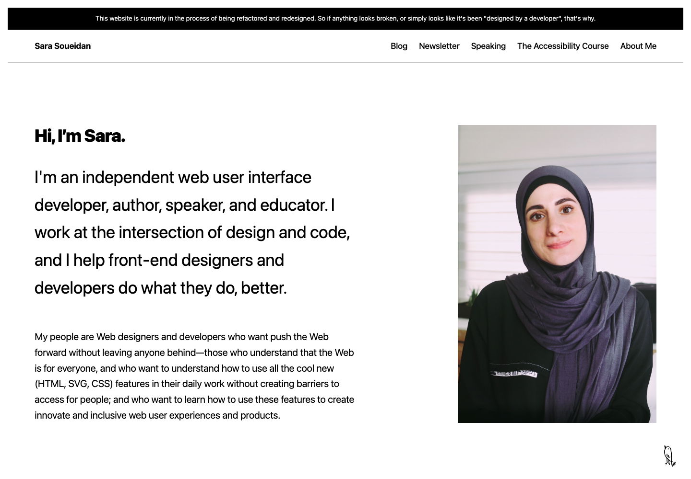

黑白排版、鲜明字重与大尺度人像。
Sara Soueidan 的个人网站将视觉重点放在介绍文字与人物照片上。页面大面积留白，内容平面展开；表现力主要来自文字与图像的尺度关系。¹
视觉语言
- 整体风格：现代极简，偏编辑排版。粗标题、大字号介绍与连续文章条目构成主要画面，少用容器包裹内容。
- 视觉气质：直接、清楚、带有专业表达的力度；真实人像与手绘鸟形入口保留个人面貌和趣味。
- 设计取舍：姓名、职业介绍和照片承担首页重心。读者首先接触具体的人与文字，作品缩略图和装饰背景没有成为主要叙事方式。

官网首页截图，2026 年 10 月 19 日。页面与图像内容归原作者。
字体与层级
- 字体选择：当前标题与正文使用系统无衬线字体，以尺度、字重与间距建立层级。
- 首页介绍：问候标题与职业介绍字号接近，前者粗黑、后者常规；用字重区分简短问候与展开说明。
- 文章标题：粗字重、较紧的行距形成集中而明确的主题块；正文行距更舒展，阅读节奏随角色改变。
- 代码：示例使用等宽字体与语法着色，与自然语言段落形成区别，便于在解释与代码之间对照阅读。³⁴
版式与节奏
- 桌面首页：文字在左、人像在右；介绍区与导航之间留出较大空隙，给予自我介绍充分的展示面积。
- 首页内容区：文章与近期动态分栏，条目内部连续排列、条目之间大幅留白；靠重复的标题、日期与摘要顺序维持秩序。
- 阅读页：标题与摘要使用较宽区域，正文进一步收窄。页面同时保留主题展示的尺度与连续阅读的行长控制。
- 手机取舍：文字与人像转为上下排列，长标题仍保留较大字号。主题表达鲜明，但标题和介绍占据更多屏高，进入正文需要较长的滚动距离。
色彩
- 基础色：白底、黑字贯穿所观察的页面；文字层级更多由字号、字重与间距承担，整体对比明确。
- 局部色彩：人物照片保留原色，代码按语法区分颜色；彩色集中在具体内容中，没有覆盖整片阅读背景。
- 功能强调：键盘唤出的“跳至正文”提示采用亮粉色，在黑白页面上形成明显定位。粉色在这个场景中承担操作提示，而非普通浏览时的大面积主色。⁴
图像与形状
- 人像：竖幅、直角、较大面积展示，保留人物与环境；与左侧文字建立并列关系，强调作者本人。
- 姓名与鸟形：导航以姓名文字标识站点；右下角的手绘鸟形承担回到顶部入口。手绘线条为规整的文字排版增加局部趣味。
- 内容容器：文章条目平面排列；目录与更新记录等折叠区域使用清楚的边框，区分可操作区域与普通正文。
动效与反馈
- 稳定浏览：所观察页面以静态内容为主，反馈集中在链接下划线、键盘焦点与内容展开。
- 键盘焦点：链接获得焦点时出现醒目的黑色双线框与白色衬底。反馈存在感较强，优先保证操作位置可见，而非保持画面始终轻淡。
- 内容展开：文章目录点击后原位展开，读者按需查看；较长目录不必持续占据正文顶部空间。
- 滚动偏好：平滑滚动响应“减少动态效果”设置；本次浏览器检查中，开启该设置后恢复直接滚动。⁴
资料与观察范围
- Sara Soueidan 首页。访问时官网明确提示正在重构与改版；本文记录当前版本的视觉表现，不是作者的官方设计规范。
- 博客列表。
- 样例文章：CSS-generated content 的替代文本。
- 官网公开样式。字体、字重、焦点及滚动偏好结合实际渲染核对；未将未生效或未使用的样式声明写成画面事实。
观察时间：2026 年 10 月 19 日。范围为上述三页、桌面与手机宽度，以及键盘焦点、目录展开和滚动偏好。视觉气质与取舍属于本文分析；未进行真人使用研究、手机真机或完整无障碍审计。


留言
由 Disqus 提供。